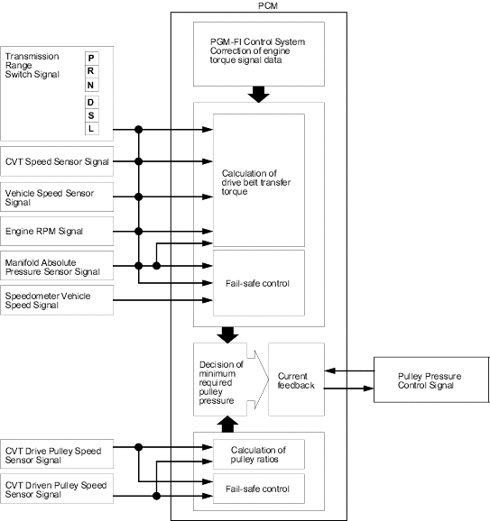

Honda Multi Matic Transmission/CVT
|
14-266 |
Electronic Control System (cont'd)
Pulley Pressure Control
For reducing belt slippage and long belt life, the PCM inputs signals from the sensors and switches and actuates the pulley pressure control valve assembly to regulate optimum pulley pressure to the pulleys.
When the pulley ratio is low (vehicle is driven in low speed), the driven pulley receives high pulley pressure to hold large diameter and the drive pulley receives low pressure to hold diameter of proportion to the driven pulley.
When the pulley ratio is high, the driven pulley receives low pressure and drive pulley receives high.
